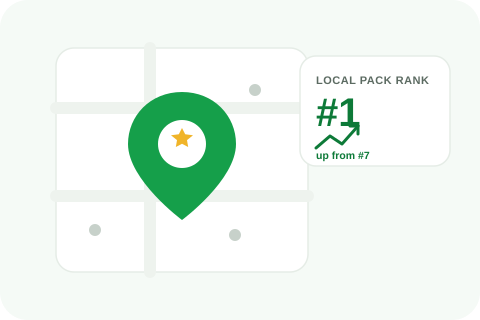

A business pivots, a restaurant adds a bar focus, a general contractor narrows to roofing specifically, and the owner updates the primary category on their Google Business Profile to match. The reviews themselves don't disappear or reset, but the category change can shift how your profile competes and how those existing reviews read in context, in ways worth understanding before you make the switch.

Every review you've accumulated remains tied to your Google Business Profile itself, not to whatever category happened to be selected at the time it was posted. Changing your primary category doesn't delete, hide, or reset review counts or your overall star rating, the review history travels with the listing regardless of what category sits on top of it.
A business setting up its profile for the first time is working from a blank slate, choosing the right categories from the available options with no existing review history to account for. A business changing categories after the fact has to weigh how an established reputation, built under one category, translates into a new competitive context, a genuinely different decision with different stakes.
If your older reviews consistently praise the service you're moving away from, a landscaping company that's repositioning toward hardscaping specifically, for example, that review content keeps surfacing to customers evaluating you under your new, narrower category. There's no way to selectively hide or reorder reviews by topic, so a pivot works best when it's paired with actively encouraging new reviews that reflect the direction you're actually heading now.
Local ranking signals take time to resettle after a category change, and a dip or shift in visibility in the first few weeks doesn't necessarily mean the change was a mistake, it often just reflects Google recalibrating your listing against a new, unfamiliar competitive set. Avoid switching categories repeatedly while testing for an immediate ranking bump, since frequent changes can themselves look like a pattern worth deprioritizing rather than a confident, settled positioning decision.
A category change that isn't paired with an updated business description, updated Services section entries, and fresh photos reflecting the new focus sends a mixed signal, both to customers and to Google's own understanding of what you actually do. Treat a category switch as a full listing refresh, not a single field to update in isolation.
A category change right after a run of strong reviews under your old focus is a reasonable moment to pivot, since you're bringing a genuinely solid reputation into the new competitive context rather than starting that transition from a weaker position. Making the switch during a stretch of mixed or negative reviews can compound the uncertainty already inherent in a category change, so where you have the flexibility to time it, lean toward making the move from a position of relative strength rather than during a rough patch.
We help businesses navigate a category change without losing the local visibility they've already built.